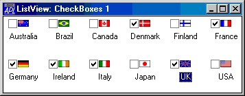

| Applies To: | ListView | TreeView |
Description
The CheckBoxes property specifies whether or not check boxes are displayed alongside items in a ListView or TreeView object.
CheckBoxes is a single number with the value 0 (check boxes are not displayed) or 1 (check boxes are displayed); the default is 0.
For a TreeView, CheckBoxes will only be honoured if the items have pictures associated with them (via the ImageListObj and ImageIndex properties).
For a ListView, CheckBoxes applies to all settings of the View property.
The GetItemState method can be used to determine if a specific item in a ListView or TreeView is checked. The result of the method will have the 13th bit set if the item is checked.
STATE←Form.ListView.GetItemState 11
13⊃⌽(32⍴2)⊤STATE
1The picture below illustrates the effect on the appearance of a ListView object, of setting CheckBoxes to 1.
